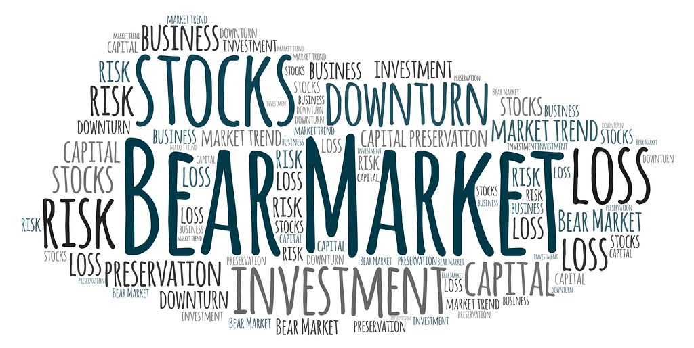

פורסם בתאריך 6.4.2020.
התכנים בפוסט זה, כמו כל שאר התכנים בבלוג, הינם תכנים לימודיים במהותם, הם אינם מהווים ייעוץ או המלצה לביצוע פעולה בנייר ערך, ואין לראות בהם תחליף לייעוץ השקעות ו/או ייעוץ פנסיוני המתחשב בצרכיו הייחודיים של כל אדם.
בפוסט הזה אני רוצה לחדד נקודה אותה נשאלתי פעמים רבות בזמן האחרון ע"י מס' קוראים ובוגרי הקורס שלי, ומתייחסת לחשש ממעבר בין השקעות בגלל האפשרות לקיבוע הפסד לאחר הירידות האחרונות בשווקים.
מי שלמד אצלי ו/או קרא את הפוסטים שלי כבר מכיר את היתרונות הגדולים בהשקעה פאסיבית עצמאית על חשבון מוצר מנוהל כזו או אחר, יתרונות שמתבטאים בחיסכון ניכר בדמי ניהול ובמיסוי על דיבידנדים, בקביעת תמהיל השקעה שמותאם לצרכים האישיים (בניגוד למסלול "כללי" גנרי שלא מתאים למרבית האנשים ובפרט שמרני מדי לרובם), ובהשגת תשואת השוק באמצעות מעקב אחרי מדדים, לעומת קרנות/קופות מנוהלות שרובן המוחלט יפגרו אחרי המדד הרלוונטי, חלקן בפיגור משמעותי, עפ"י המון מחקרים ונתונים מהארץ ומהעולם.
אחרי שהפנימו את היתרונות בהשקעה פאסיבית עצמאית, החליטו רבים מהבוגרים לקחת אחריות על עתידם הפיננסי ולהשקיע ביעילות בכוחות עצמם. זה אומר, בין היתר, לבצע את הפעולות הבאות:
א. לפדות את פוליסות החיסכון, קופות הגמל להשקעה, והחשבונות המנוהלים ולהעביר את הכסף לחשבון למסחר עצמאי בו ייקנו קרנות פאסיביות (בתמהיל כזה או אחר של מניות ואג"חים, ואולי גם קרנות ריט).
ב. למכור קרנות מנוהלות או קרנות סל ישראליות ולקנות במקומן קרנות איריות יעילות יותר.
ג. לנייד את קרנות ההשתלמות לקרן השתלמות בניהול אישי (IRA).
ד. לנייד את צבירת החיסכון הפנסיוני לקופ"ג IRA (ישנם מקרים בהם זה לא כדאי, בעיקר לגברים מגיל 41).
דילמת מועד המעבר בין השקעות
היכן צצה הדילמה? כיוון שלאחרונה התרחשו ירידות בשווקים בגלל מגיפת הקורונה, רבים חוששים לבצע את תהליך המעבר שתכננו כדי לא "לקבע הפסד" ע"י ביצוע מכירה או מעבר למוצר אחר לאחר הירידות, לפני שתגיע ההתאוששות. זאת כמובן טעות ובמעבר כזה אין שום קיבוע הפסד, כי קיבוע הפסד אפשרי באחת משתי דרכים:
1. מכירת התיק או חלקו לאחר ירידות משמעותיות כדי לנצל את הכסף לצריכה ולא להשקעה אחרת.
2. מכירת התיק או חלקו לאחר ירידות מתוך ניסיון "לתזמן את השוק" כלומר מתוך שאיפה להימנע מירידות נוספות, אחזקת הכסף במזומן או באפיק חסר סיכון, וחזרה לשוק אחרי שהשוק יתחיל להתאושש.

מתי אין קיבוע הפסד?
כאשר הכסף ממשיך להיות מושקע ופשוט עובר מהשקעה אחת להשקעה אחרת, יעילה יותר. בואו ניקח דוגמא של משקיעה בשם דנה שמחזיקה בקופ"ג להשקעה במסלול מנייתי בדמי ניהול של 0.8%, שהתשואה שלה מפגרת ב-0.5% בממוצע לשנה אחרי המדד הרלוונטי (רוב המוצרים המנוהלים מפגרים ביותר מ-0.5%), ונחשפת למדד באמצעות חוזים עתידיים שמגלמים מיסוי של 30% על הדיבידנדים, שמשמעותם הוא מיסוי של כ-0.6% מהתיק כל שנה. דנה תכננה לעבור לחשבון מסחר עצמאי שלא גובה דמי ניהול, לרכוש בו שתי קרנות סל איריות בדמי ניהול של 0.2%, שהמיסוי שלהן על דיבידנדים מופחת ועומד בממוצע על 10% מהדיבידנדים (כ-0.2% מהתיק לשנה), והן משיגות את תשואת המדד ולא מפגרות אחריו. המשמעות של מהלך כזה אומר חיסכון בעלויות ותשואה עודפת של כ-1.5% בממוצע לשנה(!), או כ-30% יותר תשואה על פני 15 שנה.
במידה ודנה היתה נשארת עם ההשקעה המקורית שלה, הפחות יעילה, רק כדי לא לקבע הפסד, היא היתה מפסידה את התשואה העודפת שיכלה להשיג באמצעות ההשקעה היעילה יותר ומאריכה את משך הזמן להתאוששות. הרי אם היתה עוברת להשקעה היעילה יותר לפני הירידות, היא לא היתה בדילמה כזו, אז מדוע שתהיה דילמה גם לאחר הירידות?
חשוב להדגיש כי אין כאן כוונה שבהשקעה היעילה יותר בהכרח תושג תשואה חיובית בתקופה הקרובה. בהשקעות בשוק ההון (ובכלל) תמיד יש תנודתיות, כאשר אפיקים תנודתיים יותר הם יותר רווחיים, ואפיקים תנודתיים פחות הם גם רווחיים פחות. כל מה שזה אומר זה שההשקעה היעילה יותר תשיג תשואה יותר טובה מההשקעה הפחות יעילה. בתקופות של משבר כולם יחטפו אבל ההשקעה הזולה והיעילה תחטוף פחות, ובתקופות של גאות (שזה רוב הזמן בשוק ההון) כולם יעלו, אבל ההשקעה הזולה והיעילה תעלה יותר.
אז המסקנה המתבקשת היא שאין היגיון בהמתנה להתאוששות בהשקעה פחות יעילה וכדאי לעבור להשקעה יעילה יותר בהקדם, למרות הירידות בשווקים. אבל גם פה יש כמה תתי-מקרים שאני רוצה לנתח:
1. הישארות באותו תמהיל: התחלנו בתמהיל מסוים בהשקעה המנוהלת ואנחנו רוצים לשמור על אותו תמהיל בהשקעה פאסיבית עצמאית (למשל מסלול מנייתי שמחזיק 100% מניות ויומר לקרנות סל עוקבות מדדי מניות, או מסלול כללי שמחזיק 45% מניות, 45% אג"חים ו-10% נדל"ן מסחרי ויומר ל-45% קרן סל מנייתית, 45% קרן אג"חית ו-10% קרן ריט). במקרה זה ניתן לנייד באופן מיידי ללא קשר למצב בשווקים.
2. הגדלת חשיפה מנייתית: רבים מהמשקיעים חסרי ידע בהשקעות ובוחרים במסלול מנוהל ושמרני יחסית שלא מתאים לצרכיהם, כגון מסלול "כללי". לאחר לימוד האפיקים השונים ומאפייני התשואה והסיכון שלהם, הגדרת יעדים ומטרות לטווחי זמן שונים, ובחירת תמהיל מתאים בהלימה ליעדים ולמטרות (תהליך שאני מלמד בקורס השקעות ופנסיה ביעילות ובפשטות), רבים מגיעים למסקנה שעליהם להגדיל את החשיפה המנייתית בתיק. במקרה זה, אין כל בעיה להמיר את המרכיב המנייתי בתיק להשקעה מנייתית יעילה וזולה יותר, אך עשויה לצוץ דילמה לגבי המרכיב האג"חי, שגם הוא ספג ירידות (פחותות מהאפיק המנייתי, אבל גם ירד). אבל עבור מי שכבר החליט על הגדלת החשיפה המנייתית מתוך רצון לייצר תשואה עודפת לטווח הארוך, האם זה בכלל חשוב שהמרכיב האג"חי יתאושש קודם מהירידות שלו ורק אח"כ נסיט אותו או את חלקו למניות? אני לא רואה בכך טעם.
3. הקטנת חשיפה מנייתית: ייתכן וחלק מהמשקיעים יבינו, לאחר לימוד ותכנון תכנית מותאמת אישית, שהחשיפה המנייתית שלהם היתה גבוהה מדי לצרכיהם ויחליטו להקטין אותה. במקרה זה המרכיב המנייתי הוא זה שירד משמעותית, אז אם הדבר אפשרי והם לא זקוקים לכסף בטווח הזמן הקרוב, הייתי דווקא נמנע מהקטנת החשיפה המנייתית ונשאר באותו תמהיל, כי הקטנת חשיפה מנייתית היא בדיוק התרחיש של קיבוע ההפסד. למשל, אחד ה-best practices בנוגע לחיסכון הפנסיוני אומר להתחיל להקטין את החשיפה המנייתית כעשור לפני גיל הפרישה, למשל בגיל 55-57 לגברים. אז נניח שהיינו בחשיפה מנייתית גבוהה לאורך השנים כדי למקסם תשואות ובגיל 55 החלטנו להתחיל לצמצם אותה ולהחזיק יותר אג"חים. אבל בדיוק בגיל 55 הגיע משבר הקורונה (או הסאב-פריים, או הדוט-קום וכו') והשווקים ירדו בחדות. מה כדאי לעשות במקרה זה? להישאר בחשיפה מנייתית גבוהה כמובן! המשברים החמורים ביותר בהיסטוריה התאוששו תוך כ-12-14 שנה (היו 4 כאלה בלבד לאורך 150 שנה), ובמרבית המקרים תוך זמן קצר הרבה יותר. אז בתרחיש הגרוע ביותר נישאר בחשיפה מנייתית גבוהה עד הפרישה לגמלאות, והתיק יחזור פחות או יותר לנקודה בה היה לפני המשבר. בתרחישים יותר סבירים ופחות גרועים, התיק יחזור מהר יותר לאותה נקודה, ואז נוכל להתחיל בצמצום החשיפה המנייתית מבלי לקבע את ההפסד.
קצת על תזמון השוק
בהערת אגב, אציין כי מי שמעוניין לצמצם חשיפה מנייתית כדי להגדיל אותה מאוחר יותר, כלומר לתזמן את השוק, סביר להניח שיפסיד פעמיים: פעם אחת ע"י קיבוע ההפסד במכירה לאחר הירידות (שאולי קרובות לסיום ואולי לא), ופעם נוספת ע"י פספוס של חלק ניכר מהתיקון חזרה למעלה, או במילים אחרות – מכירה בזול וקנייה ביוקר. הדבר נובע, בין היתר, מהעובדה שלאחר משברים חמורים, התיקונים חזרה למעלה הם תיקונים חדים, ומתרחשים לרוב במס' חד ספרתי של ימי מסחר, כמו למשל עליות של 11% ביום אחד ו-20% תוך 4 ימים בחודש מרץ 2020. גם בשנת 2009, בה השוק עלה בכ-30% היו מס' ימי מסחר עם קפיצות גבוהות במיוחד. כמו שאף אחד לא יודע מתי יתחילו הירידות, אף אחד גם לא יודע מתי יהיה התיקון חזרה למעלה, ואם החזקתם מזומנים "עד יעבור זעם" כנראה שתפספסו חלק ניכר מהתיקון מעלה. ימי וחודשי המסחר הטובים ביותר בהיסטוריה התקיימו תוך כדי ואחרי ירידות משמעותיות. למשל, אם ניקח את התשואה ב-30 השנים האחרונות מבלי להחשיב את 25 הימים המוצלחים ביותר, התשואה הכוללת תקטן כמעט בחצי(!), ועם הריבית-דריבית נאבד שני-שליש(!) מסך התשואה.
חלקנו אולי חושבים ש"הפעם המשבר הזה שונה" בגלל כל מיני סיבות ונבואות זעם. אני לא אומר שאין אפשרות שהפעם המשבר לא יהיה חמור, אבל ההיסטוריה הוכיחה שהשוק תמיד התאושש בצורה מרשימה למרות כל נבואות הזעם, לאורך ההיסטוריה הארוכה של השוק. תמיד יש נראטיב כלשהו שעשוי לשכנע אותנו פסיכולוגית ש"הפעם זה אחרת" ולגרום לנו להתנהג באופן לא רציונאלי, אבל הפסיכולוגיה לרוב לא מתיישבת עם המציאות. הקטנת חשיפה מנייתית אחרי ירידות משמעותיות היא ככל הנראה הדבר הגרוע ביותר שאפשר לעשות, והיא נמדדה במחקר שכלל 1,032 ירידות משמעותיות בשוק ההון בין 1,692-2015, שכל אחת מהן בטח הרגישה "מיוחדת", עם סיפור מפחיד משלה.
מה לגבי משבר הקורונה הנוכחי? אז מסתבר שהוא לא כזה מיוחד, גם אם המצב של סגר גלובלי מרגיש לנו הזוי. בפוסט הבא אשווה אותו למשבר דומה, ואף חמור יותר (נכון לעכשיו בכל אופן, טפו-טפו-חמסה-חמסה), של מגיפת השפעת הספרדית, ואבחן מה היה המצב הכלכלי לפני המשבר, מה היו תוצאות המגיפה בזמן המשבר, ואיך השווקים הגיבו והתאוששו לאחר המשבר.
רוצה לשאול שאלות ולהשתתף בדיון? את/ה מוזמן/ת לפוסט בעמוד הפייסבוק שלנו.
רוצה לקבל סוף כל סוף את כל הכלים והידע הפרקטי כדי להשקיע בקלות וביעילות את כספיך וחסכונותיך? לחץ/י כאן כדי לראות את שירותי ההדרכה והסיוע במימוש השקעות פאסיביות שאנחנו מציעים.